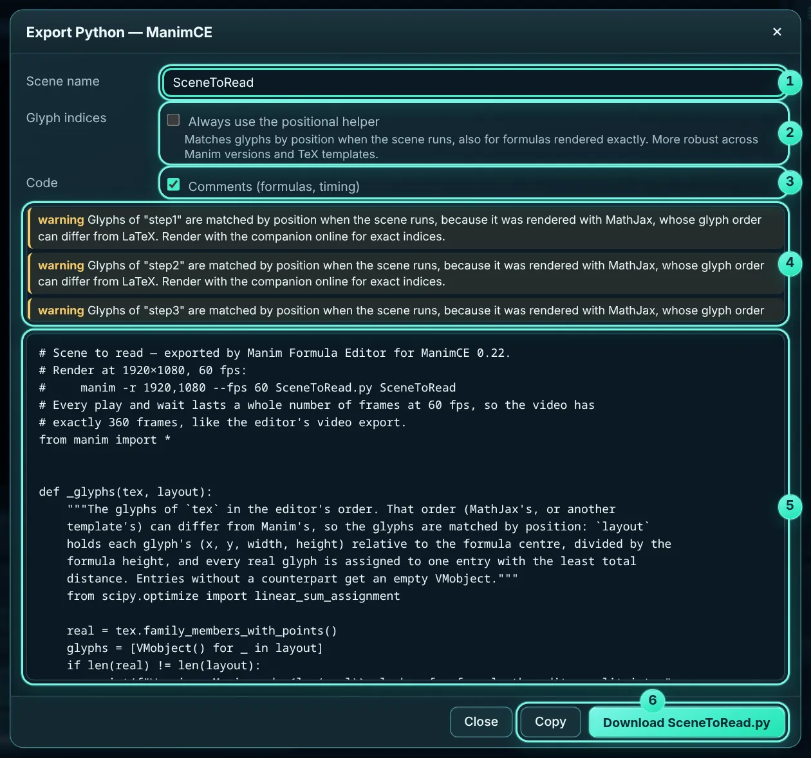

The generated Python
Every project exports as a plain Manim scene that you can read, run and change. This page reads one scene line by line, runs it, and says what is safe to edit.
Getting the file
Choose Export ▸ Python — ManimCE… or Export ▸ Python — ManimGL…. The Export… button next to the menus opens the last one you used, and its arrow lists every export (Exporting compares them).

- Scene name: the name of the Python class, and of the file. It must be a valid class name that the generated code does not use itself; when it is not, the dialog suggests a safe spelling.
- Always use the positional helper: how the scene finds the glyphs of a formula (further down).
- Comments (formulas, timing): the comment lines that name each formula and say which seconds each step covers. Turn them off for a shorter file.
- The notes list what the code cannot guarantee. An empty list says The scene reproduces the preview: exact glyph indices, whole frames., or, with the positional helper ticked, The scene reproduces the preview: glyphs matched by position when it runs, whole frames.
- The code, to read.
- Copy puts the code on the clipboard, and Download SceneToRead.py saves it.
While a formula of the timeline is still being drawn, the dialog says Waiting for a formula to render and gives no code, so that it never exports a partial scene. Copy and Download stay off while a formula has no render of its current LaTeX; the Creator shows the error.
Should the editor fail to write the scene, the dialog says so where the code would be, The scene could not be written as Python (…), with nothing to copy or download. It is a fault of the editor, not of your scene; the project is as it was, so save it, and fixing the problems it has may get around the fault.
What the file holds
The file is a normal Manim scene. This is the exported file of the scene above, with the tabs for both libraries; the rest of the section reads the ManimCE tab. Play the scene above and watch its strip: the first formula writes itself during seconds 0 to 1, the first transformation runs from 2 to 3, the second from 4 to 5. The comments of the code name the same seconds.
The header
# Scene to read — exported by Manim Formula Editor for ManimCE 0.22.
# Render at 1920×1080, 60 fps:
# manim -r 1920,1080 --fps 60 SceneToRead.py SceneToRead
# Every play and wait lasts a whole number of frames at 60 fps, so the video has
# exactly 360 frames, like the editor's video export.
from manim import *The first line of the comment names the project and the library it is written for (ManimCE 0.22 here; ManimGL 1.7 for the other export). The next two give the size and frame rate of the project and the command that renders the scene at them. Two more lines, which come with the option Comments (formulas, timing) (on by default), say that every play and wait lasts a whole number of frames and how many the video has: the scene lasts 6 seconds at 60 frames a second, which is 360 frames, exactly the frames of the timeline.
When the project has sound that goes on after the last animation, the end of that comment says so instead (again only with Comments on): The editor’s video export is longer (… frames): it lasts until the project’s audio ends, and this scene has no audio. The Python is the picture alone.
The scene
class SceneToRead(Scene):
def construct(self):
self.camera.background_color = "#000000"One Scene class holds everything. Its name is the one in the dialog, and the
project’s background colour (File ▸ Project settings…) is set
first.
A scene with a camera is a
MovingCameraScene in ManimCE, and each camera move is a play of its own among
the others.
The formulas
Each formula that the timeline uses is built once, before anything plays. Here is the first one:
# step1: 2x + 1 = 7
step1 = MathTex(r"2x + 1 = 7", font_size=96)
step1_g = _glyphs(step1, [
(-2.7467, 0.0475, 0.5264, 0.8786), (-2.0488, -0.1075, 0.6425, 0.5976), (-0.8553, -0.0613, 0.8786, 0.8773), (0.2875, 0.0475, 0.4538, 0.8786),
(1.4904, -0.062, 0.8786, 0.3087), (2.7263, 0.0396, 0.5673, 0.9208),
])
step1_g[1].set_color("#F4C867")
step1.move_to([-1.0921, 0, 0])
step1.set_z_index(1)- The comment is the formula’s name in the editor, and its LaTeX.
MathTexis Manim’s class for a formula, with the LaTeX as a raw string and the formula’s size asfont_size. A formula that is on the timeline twice gets one object per clip (step1,step1_2).step1_gis the list of the formula’s glyphs, numbered as the editor numbers them (below). In2x + 1 = 7, glyph 1 is the x.set_colorgives that glyph the colour it has in the editor.move_tois where the clip puts the formula, in scene units: the origin is the middle of the frame, y points up, and the frame is 8 units tall.set_z_indexis the layer. The front track of the timeline gets the higher number, so a formula in front is drawn over one behind it.
The timeline: plays and waits
# 0 s – 1 s: step1 write
self.play(Write(VGroup(*step1_g[:])), run_time=1)
# 1 s – 2 s
self.wait(1)
# 2 s – 3 s: step1 fade_out, step1 → step2
self.play(
FadeOut(VGroup(step1_g[2], step1_g[3])),
ReplacementTransform(step1_g[0], step2_g[0]),
ReplacementTransform(step1_g[1], step2_g[1]),
ReplacementTransform(step1_g[4], step2_g[2]),
ReplacementTransform(step1_g[5], step2_g[3]),
run_time=1,
)The timeline is cut at every moment when something starts or stops. A stretch with
nothing running is self.wait(…); a stretch with animations is one
self.play(…) that holds all of them, so they run together. The comment above
each line says which seconds it covers and what is in it. Every duration is a whole number
of frames, so the scene lasts exactly as long as the editor’s own video.
What each line is, and where it comes from in the editor:
| In the code | In the editor |
|---|---|
Write(VGroup(*step1_g[:])) | The Write intro of the first clip, on every glyph of the formula. |
ReplacementTransform(step1_g[0], step2_g[0]) | A pair of a relation: glyph 0 of step1 becomes glyph 0 of step2. |
FadeOut(VGroup(step1_g[2], step1_g[3])) | The glyphs of the source that no pair takes (the + and the 1) leave with the clip’s outro. |
FadeTransform(step2_g[3], step3_g[2]) | A pair whose style is fade, in the next relation. |
self.wait(1) | A stretch with no animation. |
When a formula comes on a track in front of the one it came from, its glyphs are moved to the new layer just before they move, so that they are drawn in front all the way:
step2_g[1].set_z_index(1)
step2_g[2].set_z_index(1)
step2_g[3].set_z_index(1)What it makes
The video that ManimCE renders from the file above, at 480p and 15 frames a second to keep it small:
How the scene finds the glyphs
A transformation names glyphs: this one becomes that one. The editor numbers the glyphs of a formula in the order its renderer gives them. Manim numbers them in its own order, and the two can differ: MathJax puts the bar of a fraction after its numerator and denominator, for example. There are two ways to keep them in step.
Exact indices
A formula that the editor drew with the companion has Manim’s
own glyphs, in Manim’s order. The scene then names them directly, by their place in the
formula (in ManimCE the glyphs sit one level down, so the index starts with
[0]). This is the scene of the example below, exported for the library it was
drawn for:
# sum: 1+2+3+4+5+6
sum = MathTex(r"1+2+3+4+5+6", font_size=60)
sum.move_to([0, 0.6, 0]) frame = SurroundingRectangle(sum[0][:5], buff=0.15, color="#FFFF00", corner_radius=0.12).set_fill("#FFFF00")There is no helper in the file, and sum[0][:5] means the first five glyphs.
This is the shortest, most readable form of the scene.
The positional helper
A formula that the editor drew with MathJax, which is what you get without the companion, cannot promise Manim’s order. The scene then carries a small function that finds the glyphs when it runs:
def _glyphs(tex, layout):
"""The glyphs of `tex` in the editor's order. That order (MathJax's, or another
template's) can differ from Manim's, so the glyphs are matched by position: `layout`
holds each glyph's (x, y, width, height) relative to the formula centre, divided by the
formula height, and every real glyph is assigned to one entry with the least total
distance. Entries without a counterpart get an empty VMobject."""
from scipy.optimize import linear_sum_assignment
real = tex.family_members_with_points()
glyphs = [VMobject() for _ in layout]
if len(real) != len(layout):
print(f"Warning: Manim made {len(real)} glyphs of a formula the editor split into "
f"{len(layout)}; unmatched glyphs are not animated.")
if not real or not layout:
return glyphs # nothing to match (a formula without ink, such as \quad)
centre, height = tex.get_center(), tex.get_height()
if height < 1e-6:
height = 1.0 # a flat mobject (a rule): the editor's layout is divided by 1 then too
have = np.array([
[*((g.get_center() - centre)[:2] / height), g.get_width() / height, g.get_height() / height]
for g in real
])
want = np.array(layout, dtype=float)
cost = np.linalg.norm(want[:, None, :] - have[None, :, :], axis=2)
for i, j in zip(*linear_sum_assignment(cost)):
glyphs[i] = real[j]
return glyphsEach formula brings a list, step1_g = _glyphs(step1, [ … ]), with one entry
of four numbers per glyph: where that glyph sits in the editor’s drawing, relative to the
centre of the formula and divided by its height, with its width and its height. When the
scene runs, _glyphs asks Manim for the glyphs it really built and pairs each
with the closest entry of the list, so that the total distance is as small as it can be.
After that, step1_g[1] is the editor’s glyph 1, whatever Manim’s own number
for it is.
- What you need. Nothing beyond Manim. The matching uses
scipy, which both ManimCE and ManimGL need and install with themselves; the function imports it only when the scene runs. A plain Manim install is enough. - When it is there. For every formula drawn by MathJax; for a formula drawn for the other library than the one you export for; and for every formula when you tick Always use the positional helper, which is also the safer choice when the scene must work across Manim versions and TeX templates. A scene made only of exact formulas has no helper at all. A line or an arrow never uses it: its parts are the same in both libraries, and the scene names them through the line itself.
- What it says. With the tick off, the dialog lists each formula that uses it, with the reason; with the tick on, every formula uses it, the notes are not written and the line of an empty list says that the glyphs are matched by position. If Manim builds a different number of glyphs than the editor split the formula into, the scene prints Warning: Manim made N glyphs of a formula the editor split into M; unmatched glyphs are not animated. when it runs. Which formulas those are, and what the video then shows, is on Without the companion.
Running it
You need Manim, and a LaTeX installation that Manim can find, because Manim typesets formulas with LaTeX. The page ManimCE and ManimGL has the links to install each.
Save the code as SceneToRead.py (the dialog’s Download
does) and run the command of its header, from the folder that holds it:
# ManimCE
manim -r 1920,1080 --fps 60 SceneToRead.py SceneToRead
# ManimGL
manimgl SceneToRead.py SceneToRead -w -r 1920x1080 --fps 60- ManimCE writes the video to
media/videos/SceneToRead/1080p60/SceneToRead.mp4. For a quick look, take-r …and--fps …out of the command and use the low quality:manim -pql SceneToRead.py SceneToReadrenders at 480p and 15 frames a second and opens the result (-p). A quality flag added to the command above changes nothing, because-rand--fpscome after it; lowering those two numbers works too. - ManimGL writes the video into a
videosfolder with-w. Without-wit opens a window that plays the scene. For a quick look, leave-rout and add-l(480p):manimgl SceneToRead.py SceneToRead -w -l.
Changing it afterwards
The file is yours: read it, change it, build on it. A few edits are safe and common.
- Rename the scene. Change the class name and the command in the header comment, or pick the name in the dialog before you download.
- Colours. Change the strings of
set_color(…)and ofself.camera.background_color. - Add your own animations between the
self.playandself.waitlines of the scene, not inside them:
What you add takes time of its own: the video gets longer than the editor’s timeline.# 3 s – 4 s self.wait(1) self.play(Indicate(step2_g[1])) # yours - Add sound. The exported Python has none: its dialog says Audio is
omitted from Manim exports. Manim can add a file at any moment of the scene, with
self.add_sound("narration.mp3"), in both libraries. To get the sound mixed as it plays in the editor, export a video with sound instead (Exporting video).
Leave the glyph lists (_glyphs(step1, [ … ])) and the helper alone: they carry
the editor’s drawing of each formula, and the glyph numbers of the animations rest on
them.
How close it is to the Preview
The scene is built to reproduce what the Preview shows: the same glyphs in the same places and colours at every frame, with the timing of the timeline in whole frames. The editor’s own tests check it: they export scenes, render them with ManimCE and ManimGL, and compare the number of frames and the glyphs drawn in every frame with the editor’s.
What the code cannot promise is in the dialog’s notes: formulas matched by position, glyph counts that differ between MathJax and LaTeX, packages MathJax does not know, hidden tracks (exported anyway), an export for the other library than the project’s, and animations that were shorter than a frame and had to be stretched to one. A scene exported for ManimGL is not frame-for-frame the scene exported for ManimCE; the next page says where they differ.
Next: Without the companion, where matching by position falls short; ManimCE and ManimGL; and the companion for exact glyphs.